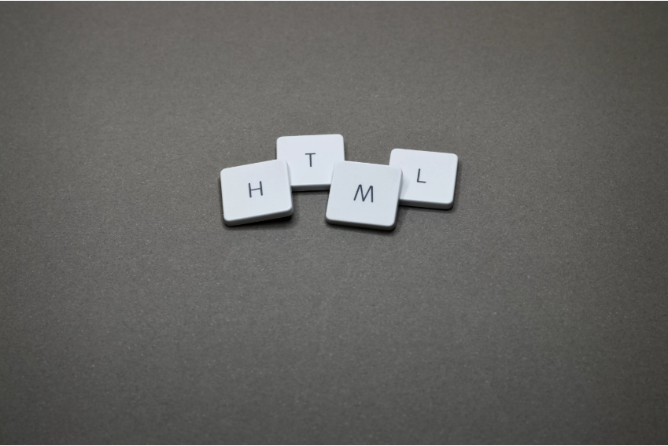

Manfaat Teknologi Dalam Kehidupan
26 Jan 2021 — Penggunaan perangkat elektronik seperti televisi,
komputer, dan smartphone pun turut membuat teknologi informasi
kian dibutuhkan masyarakat ...

Learn more >
Tag HTML
13 Okt 2021 — Hal pertama yang dibahas adalah tag. Pengertian tag HTML
adalah tanda awalan dan akhiran dalam perintah HTML yang bisa
dibaca oleh web browser.

Apa Itu Coding?
30 Sep 2020 — Dari penjelasan sebelumnya kamu sudah memahami
bahwa coding merupakan kegiatan saat kamu menuliskan
kode program menggunakan bahasa ...